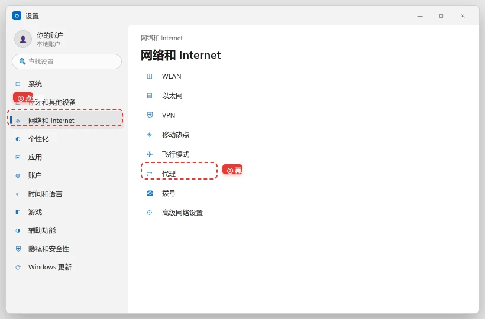

公司电脑上不了网 / 提示证书不受信任？企业代理环境排查
⚠ 需谨慎：公司网络是有审计和准入策略的生产环境。本文只做「按 IT 要求正确配置」与「定位是自己电脑还是网络的问题」；任何装翻墙/改 MAC/克隆证书来「绕过限制」的行为都可能违反公司安全制度甚至法律——本文不涉及，也不要尝试。动网络设置前，先截图留底，方便改回去。
💡 一句话结论
公司电脑「上不了网」的四大来源：上网认证掉线、代理/PAC 配置错误、自装工具抢了代理、证书不被信任。判断口诀：内网网站能开 = 网络是通的，问题在代理/认证层；这时先还原自己装过的工具改过的设置，再找 IT——而不是反复重启。
⚡ 30 秒快速排查（先试这个）
- 打开公司内网门户/OA（如
oa.company.com）。期望结果：能打开 → 物理网络和准入都正常，问题在代理/证书层，走本文；打不开 → 看是不是全员断网（问同事），或先重新连 Wi-Fi / 插紧网线。 - 回忆最近装过什么：抓包工具、加速器、新浏览器插件？全都关掉/退出再试。期望结果：不少「公司断网」是自装工具改了系统代理，退出即恢复。
- 看 IT 之前发的配置文档/邮件（PAC 地址、代理 IP:端口、认证客户端），核对系统设置是否一致。期望结果：配置一致仍不通 → 直接提 IT 工单，别再自己折腾。
合规提示
企业代理是公司为安全审计、数据防泄漏与合规要求部署的基础设施，不是故障。本文的立场是：配合 IT、正确配置、保留证据。测试用的抓包工具（Charles/Fiddler）在公司电脑上安装前先确认制度允许——很多公司的终端规范明确禁止。
适用 / 不适用
适用
- 连上公司 Wi-Fi/网线后，内网通、外网不通，或干脆全不通。
- 浏览器报「证书不受信任 / NET::ERR_CERT_AUTHORITY_INVALID」。
- 装过抓包/加速工具后公司网络就异常。
- IT 要求配置 PAC/代理，配置完反而不通。
不适用
- 家里电脑的网络问题：看「Wi-Fi 有信号但上不了网」，家宽没有企业代理那套。
- 个人 VPS/自建代理出问题：看「代理服务器没有响应怎么修」。
- VPN 客户端（如公司远程办公 VPN）连不上：以 IT 文档为准，本文只覆盖办公内网场景。
开始前确认
- 确认同座位同事的电脑正常（排除整层断电/交换机故障）。
- 手机连公司 Wi-Fi 测试：手机也不通 → 网络侧问题，提工单即可。
- 截图当前的网络设置（代理页、证书报错页），改动前留底。
- 找到 IT 的配置文档或上次的工单记录。
- 记住自己装过哪些网络相关工具（抓包/加速/杀毒）。
怎么确认修好了
- 内网、外网都正常，浏览器无证书告警。
- 系统代理/PAC 设置与 IT 文档一致，重启电脑后依然正常。
- 没有残留的抓包工具代理（重启后设置不再被改）。
还是不行？
- 全部门/全公司都不通 → 不是你的问题，等 IT 广播即可，别自己重装系统。
- 只有你的电脑不通且 IT 也定位不了 → 备份数据后请 IT 重装准入客户端或重新注册终端。
- 反复被某个自装工具改代理 → 卸载它；工作必需的抓包需求，向 IT 申请白名单版本。个人机器上的同类清理见「装了抓包/加速工具后全网断网怎么恢复」。
预防
- 公司电脑不装来路不明的网络工具；必须装的，记下它改了什么。
- IT 的网络配置文档存到收藏夹，换工位/重装后照着配一遍最快。
- 改任何网络设置前先截图——这是网络排障的「后悔药」。
更新日志
- 2026-10-24 v1.0：首版发布。覆盖认证、代理还原、证书、PAC 与工单五层排查。
分步骤
区分「认证问题」还是「代理问题」
- 浏览器访问一个明确的 HTTP 站点（如
http://neverssl.com）。企业网关常会把未认证流量重定向到认证页——若弹出登录/认证页，完成认证即可。 - 认证页弹不出来 → 手动访问 IT 文档里的认证地址（通常是
http://1.1.1.1或公司指定的内网地址）。
期望结果：认证通过后外网恢复。失败了怎么办：始终无认证页 → 代理层问题，进步骤 2。
- 浏览器访问一个明确的 HTTP 站点（如
核对并还原系统代理设置

先按 Win + I 打开设置，点左侧「网络和 Internet」，再点「代理」——公司统一下发的代理和 PAC 都在这两页里。 - Windows：设置 → 网络和 Internet → 代理。看「使用设置脚本（PAC）」和「手动代理」两项是否与 IT 文档一致。
- macOS：系统设置 → 网络 → 详细信息 → 代理。同样逐项核对。
- 发现不一致（尤其是自己装的抓包工具留下的
127.0.0.1:8888）→ 关掉手动代理/PAC，重启浏览器再测；确认是哪个工具改的，退干净。
期望结果：还原成 IT 要求的配置后网络恢复。失败了怎么办：仍不通 → 证书问题，进步骤 3。
证书不受信任的处理
- 报错截图里看证书签发者：公司名称 = IT 部署的审计证书，说明你的电脑没装公司的根证书，去 IT 门户下载安装（Windows 双击 .crt → 安装到「受信任的根证书颁发机构」；macOS 导入钥匙串并手动设为「始终信任」）。
- 签发者是 Charles/Fiddler 之类 → 你的抓包工具证书还挂在系统里，删掉对应根证书或完整退出工具。
- 签发者都不认识且非公司名 → 警惕中间人攻击，先断网并找 IT 核实。
期望结果：安装/移除证书后浏览器报错消失。失败了怎么办：装了公司证书仍报错 → 清浏览器 HSTS/缓存或换浏览器验证，仍报错提工单。
PAC 脚本异常
- 把 IT 给的 PAC 地址在浏览器里直接打开，确认能访问到（404/超时 = PAC 服务器问题，提工单）。
- PAC 能访问但部分网站不通 → 把 PAC 地址暂时填到「手动代理」同款配置里对比测试（Windows 需要临时勾选手动代理填 IT 的固定代理地址）。
- 测完改回原配置。
期望结果：定位到是 PAC 分流规则还是代理服务器本身的问题。失败了怎么办：分不清 → 直接把现象（哪通哪不通、截图）提交 IT，这已经到企业策略层面了。
提交高质量工单
- 工单里写清：工位/内网 IP（
ipconfig或ifconfig可查）、现象开始时间、内网/外网分别通不通、最近装过什么、已试过什么、附截图。 - 一条好工单能把 2 小时的扯皮缩成 10 分钟定位。
期望结果：IT 快速响应。失败了怎么办：等着期间需要上网 → 手机热点应急（注意公司制度是否允许办公电脑连热点，多数禁止）。
- 工单里写清：工位/内网 IP（
相关教程
最后更新：2026-10-25 · 复核：内容组
读者反馈
这篇教程解决你的问题了吗？
点一下告诉我们结果。「没解决」可以指出问题段落，管理员会回到原文核对并更新。